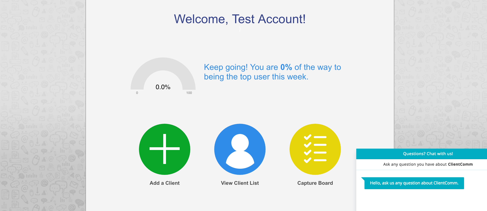
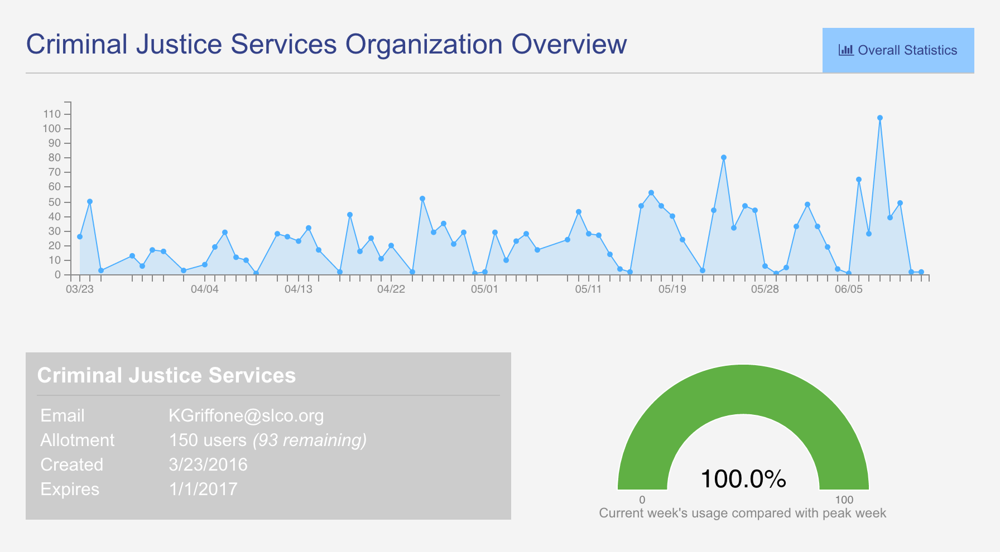

Current Version
This latest version of the application is under active improvement, having been rolled out just a few weeks ago. It is the culmination of hours of interviews with case managers and clients and incorporates a significant amount of automation designed to reduce the time cost of ClientComm on a case manager's workflow. This phase representat the maturation of ClientComm into a significantly more full-featured software offering.
 Card landing view for case managers offers them easy, guided workflows for common tasks.Learning
Delivery of application improvements formed the underpinning for engaging case managers to understand how they used the tool and what slowed them down. In an effort to address pain points with the previous build of the application, a path system was developed whereby the landing screen offered case managers three actions that they most commonly would use. Subsequent iterations have developed achievements monitoring (visible as the gauge) and 24-hour in-application instant messaging support.
Building
Key automated improvements include email alerts, auto-response logic from the application to contact from unknown numbers, and alert notifications tethered to message status changes (e.g. if a message fails to send to a particular number due to it being out of service, changed, or otherwise out of service). Looking into the future, upcoming service deployments include automated notifications and templating tools to assist case managers with common message structures.
 Latest admin dashboard features significant monitoring improvements allowing supervisors to easily consume summary statistical information regarding organization-wide utilization of ClientComm, down to individual case managers.Measuring
The administrative dashboard has undergone a significant overhaul. This effort has proved key to re-engaging supervisors in the same way that our delivery first method has with early adopters and other interested case managers. Feedback though Crisp, an embedded chat service, makes it easier for Case managers to let us know when they problems with the site and which page they are on.